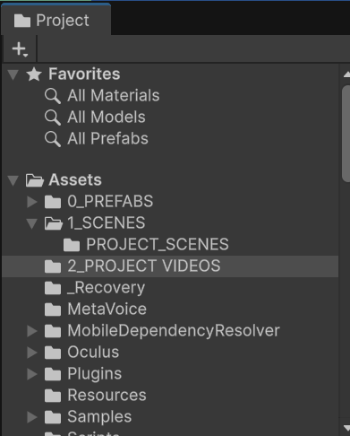
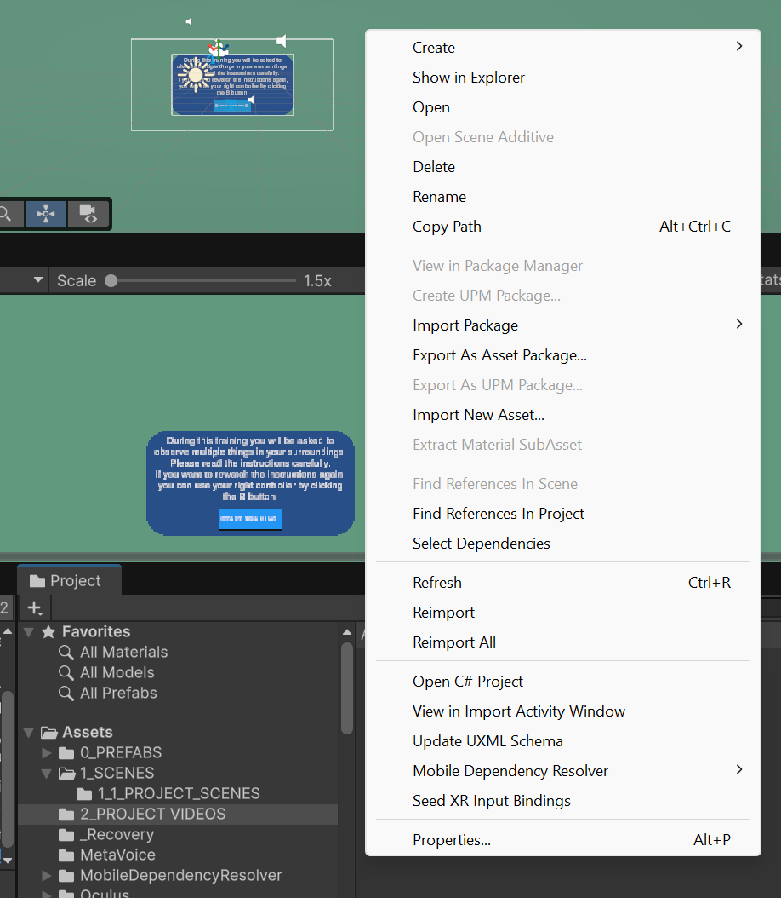
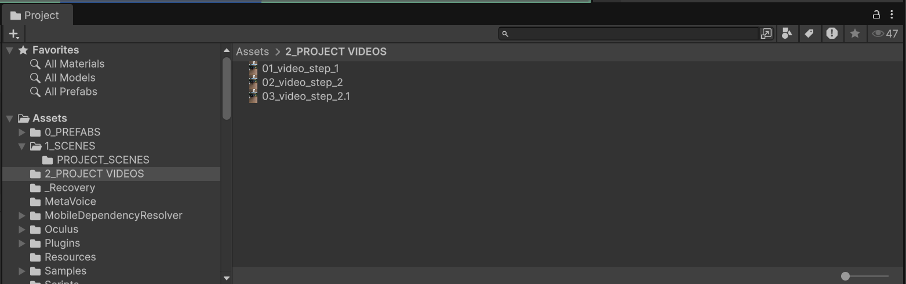
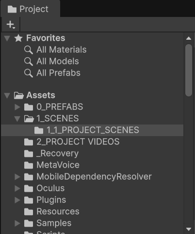
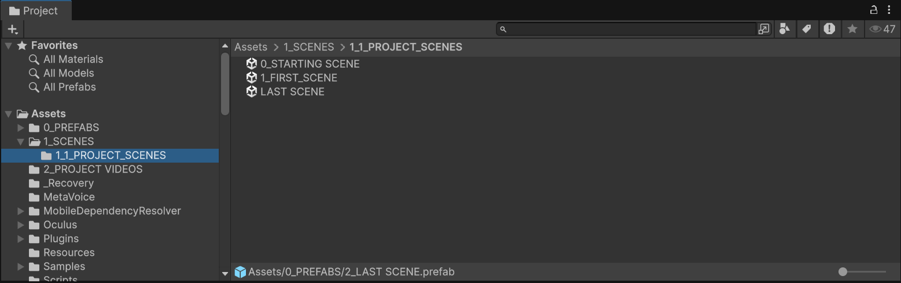
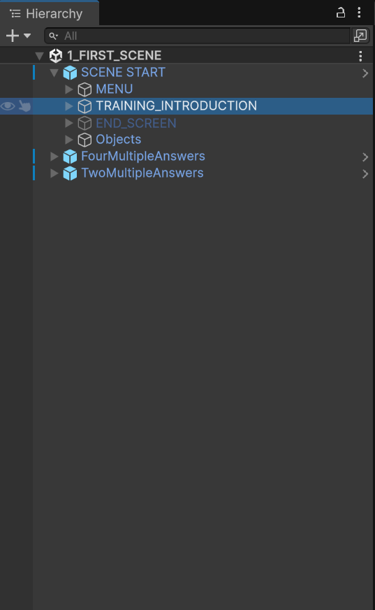
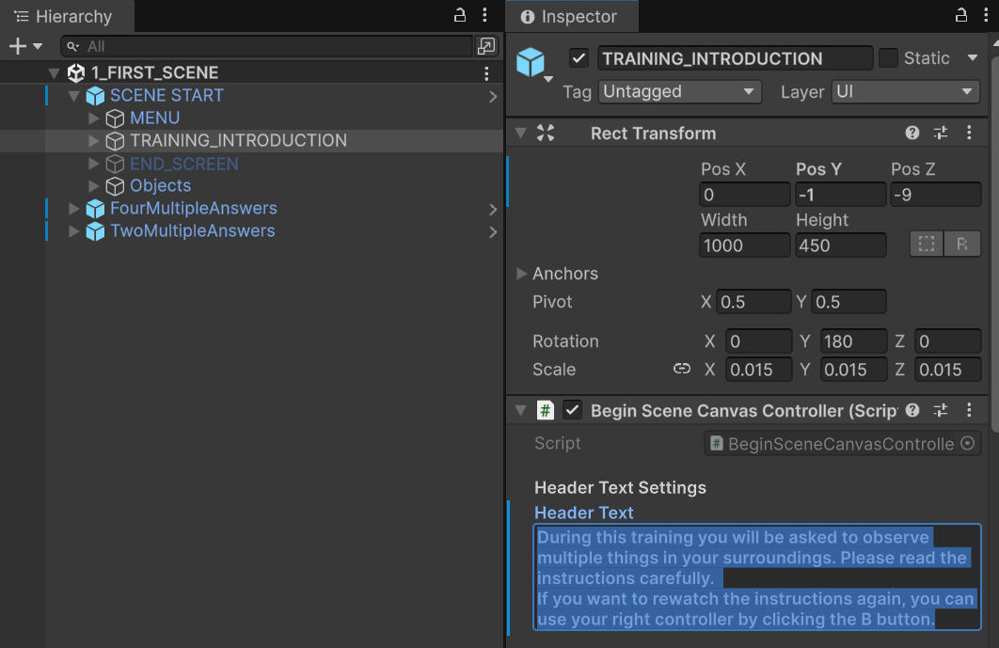

3 Create a Scene
This chapter explains how to create and configure a scene using the [Project Template Name] Unity project template.
Since this may be your first time using Unity, each step includes a navigation path showing exactly where to navigate in Unity’s interface.
Step 1: Import the Videos into Unity
Begin by importing the videos that you plan to use in the training.
- Locate the Project panel and open the following path:
Assets > 1_SCENES > 2_PROJECT VIDEOS

Figure 3.1: Locate Import Videos Path
- Double click in the right gray panel, and choose the option Import new asset. Then choose the video files from your computer.

Figure 3.2: Import Videos Path
- Wait for Unity to finish importing each video.
- Rename each video.
TIP: Give each video a short, descriptive filename that reflects its position in the training sequence.
For example:
01_video_step_1
02_video_step_2
03_video_step_2.1- Make sure that the videos are uploaded. They should appear in the right window of the Project panel.

Figure 3.3: Check Videos
Step 2: Create a New Scene
Create a new scene for each video in the training.
Important: In this project template, each scene corresponds to one video — so the number of scenes must match the number of videos you imported. For example, a training with three videos will normally require three separate scenes.
- Locate the Project panel and open the following path:
Assets > 1_SCENES > 1_1_PROJECT_SCENES

Figure 3.4: Locate Scenes Path
- You should see the following pre-built scenes on the right side of the window:
0_STARTING SCENE,1_FIRST_SCENE, andLAST SCENEin the left window of the Project panel.

Figure 3.5: Create Scenes
- To create your first scene you will use the
1_FIRST_SCENEas a template. Right-click in it and rename to your convenience.
TIP: Just like you did when you imported the videos, it is good practice to use a sequence number and a descriptive title to keep the scenes organized.
For example:
01_scene_introduction
02_scene_demonstration
03_scene_practice- To write the instructions of the training (e.g., In this training you will be asked to complete …) locate the Hierarchy panel and open the path:
SCENE START > TRAINING_INTRODUCTION

Figure 3.6: Locate Path
- Locate the Inspector panel (at the right of the Hierarchy panel), and write the instructions in the text box below the Header Text title.

Figure 3.7: Write Training Instructions
- Save the progress. File > Save
Step 3: Add a Video to the Scene
Once you have renamed the scene, assign its corresponding video.
- Locate the scene you want to add the video to, and double-click it to open it.
Important: Double-clicking is required to open a scene — a single click is not enough. To confirm a scene is open, check that its name matches the name shown at the top of the Hierarchy panel.
- In the Hierarchy panel, open the following path:
SceneStart > MENU > VIDEO_PLAYER
- Select VIDEO_PLAYER.
- In the Inspector panel, follow the path:
VIDEO_PLAYER > Video Clip
- Drag the video you want to use from the video folder into the Video Clip field.
Tip: You can find these in the Project panel:
- Scenes:
Assets > 1_Scenes > Project_Scenes > [YOUR SCENE NAME]- Videos:
Assets > 1_Scenes > [VIDEO FOLDER NAME]
- Confirm that the video appears by double-clicking on it
- Save the scene with
Ctrl + S.
Step 4: Set Up the Questions
In this section, you will set up the following for the scene you just created:
- The instructions for each question
- The content of each question
- The content of the multiple-choice answers
- Which answer is correct
- The correct feedback (shown when the participant answers correctly)
- The corrective feedback (shown when the participant answers incorrectly)
- Locate the Project panel and open the path:
Assets > Prefabs
Depending on the number of answer choices you want, drag FourMultipleAnswers or TwoMultipleAnswers into the Hierarchy panel, into the gray area. You can add as many questions as you want per video.
For example, for a three-minute video with four questions — three with two answer choices and one with four answer choices — you would drag TwoMultipleAnswers three times and FourMultipleAnswers once into the Hierarchy panel.
Note: Make sure the prefab appears directly under
SCENE START, and not nested inside one of its folders (see image below). If it appears in the wrong place, delete it (left-click it, then press Delete) and drag it again.
Click the question prefab to select it, then locate the Inspector panel and its EDIT EVERYTHING BELOW THIS subsection:
- 3.1.To edit the instruction text — replace
Write the content of the instructions here. - 3.2.To edit the question text — replace
Write the content of the question here. - 3.3.To edit the answer choices text — write each answer directly into its corresponding Answer Choice box (Answer Choice 1, Answer Choice 2, etc.).
- 3.4.To edit the correct feedback text — replace
Write your correct feedback here. - 3.5.To edit the corrective feedback text — replace
Write your corrective feedback here.
- 3.1.To edit the instruction text — replace
To choose which answer will be considered as correct, write the number of the answer in the
Conrrect Answer Choice.Repeat steps 3 and 4 for each question you have.
Note: You have the option of providing more detailes corrective feedback if the participant answers wrong multiple times the same question. You can write more detailed feedback on the subsections
Corrective Feedback Text 2,Corrective Feedback Tex 3andCorrective Feedback Tex 4.
Use the Scene Manager to determine when questions will appear during the video.
3.0.1 Open the Dynamic Sequence Setup
In the Hierarchy panel, select SCENCE MANAGER in the the following path:
SCENE START > MENU > SCENE MANAGERGo to the Inspector panel, locate Dynamic Sequence Setup.
You will see two main lists:
| List | Purpose |
|---|---|
| Question Canvases | Determines which question appears at each pause. In other words, the order of questions |
| Pause At | Determines when the video pauses for each question om seconds |
3.0.1.1 Configure Question Canvases
- Drag the questions objects that you have from the Hierarchy panel to the Question Canvases
- Write the time in the video where the questions should appear. Take into account that the numbers are in second, and they should correspond to the seconds in the Video.
3.0.1.2 Configure the Pause Times
- Set the number of items equal to the number of questions in the scene.
- Enter the video time at which each question should appear.
- Arrange the timestamps in chronological order.
For example:
| Item | Pause time |
|---|---|
| 0 | 60 seconds |
| 1 | 120 seconds |
| 2 | 180 seconds |
In this example, the questions will appear at 1:00, 2:00, and 3:00 minutes.
3.0.2 Verify that the scenes are connected
- Open the scenes in the Project panel
ASSETS > 1_SCENES > PROJECT SCENES - Leave the scenes open
- In the Hierarchy panel, in the subsection Scence Settingswrite the name of the scene that will appear after the video ends. If it is the end of the tutorial, write
LAST SCENE, so that it connects to the last scene of the project.
Step 5: Verify the Question Order
Before continuing, confirm that:
- Every pause time has a corresponding question canvas.
- The pause times are arranged chronologically.
- The question canvases are arranged in the intended order.
- The number of items in both lists is identical.
- Each question is associated with the correct point in the video.
Warning: Questions may appear at the wrong times when the order of the question canvases does not match the order of the pause times.
Step 6: Edit the Beginning Screen
The beginning screen introduces the training before the video starts.
- Locate BeginSceneCanvas in the Hierarchy panel.
- Expand the canvas to locate its text elements.
- Select the header text.
- In the Inspector panel, replace the existing text with the introduction for your training.
- Save the scene.
For example:
Welcome to the caregiver training. In this module, you will observe a caregiver responding to a child during a daily routine.
Keep the introduction:
- Brief
- Easy to read
- Relevant to the video
- Consistent with the purpose of the training module
Step 7: Edit the End Screen
The end screen determines which scene will open after the current scene is completed.
- Locate End Screen inside the SceneStart prefab.
- Select the field that identifies the next scene.
- Enter the exact name of the scene that should open next.
For example:
02 DemonstrationImportant: The scene name must be written exactly as it appears in the Unity scene list. Differences in capitalization, spacing, or punctuation may prevent Unity from opening the scene.
3.1 Step 8: Add the Scene to the Build Profile
Every new scene must be added to the Unity build profile.
- Open the scene that you want to add.
- Select File from the Unity menu.
- Select Build Profiles.
- Click Open Scene List.
- Click Add Open Scenes.
- Confirm that the scene appears in the scene list.
Repeat this process whenever you create a new scene.
Important: A scene that is not included in the build profile may work inside the Unity Editor but fail to open in the completed application.